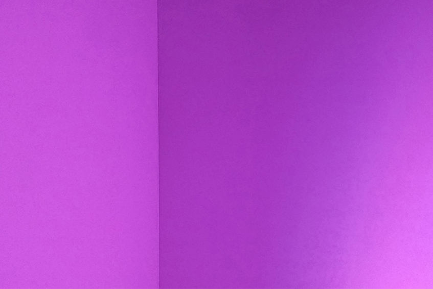
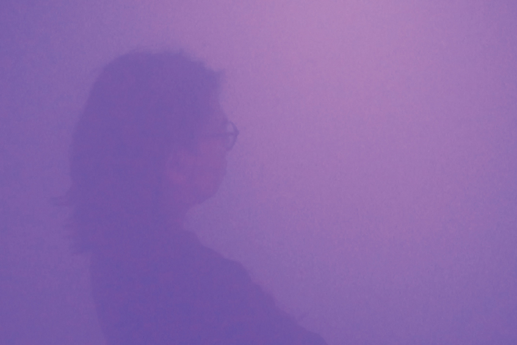

.
.


Cozy
immersive interactive installation, 2016
This is a Project about human sensibility. The project will research on the biological sense of human to develop. Firstly, what is comfort for me? or how we feel comfort? mentally? physically? To change the feeling of others, it is easier to study it physically rather than mentally. Thus, I am trying to think about how to feel comfort physically. In this project, I would like to study the sense of human to found out “comfort zone”.